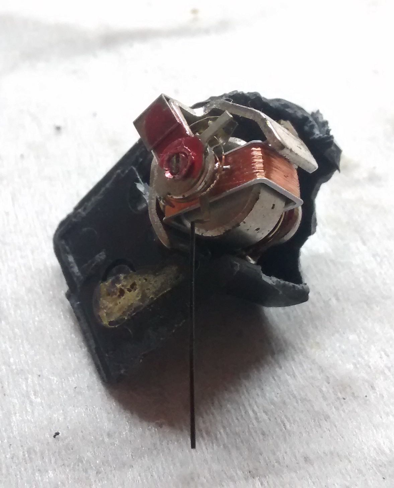
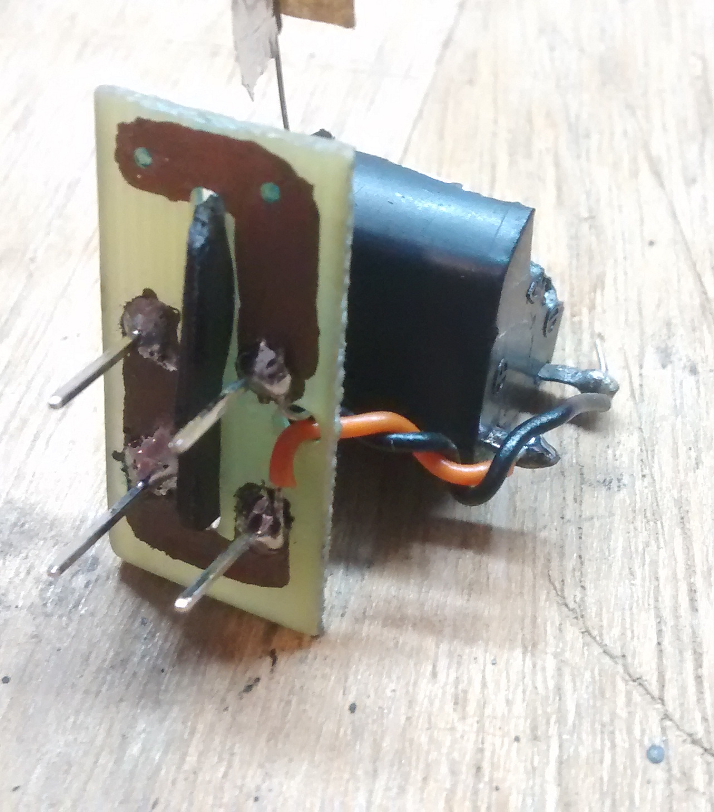

So some time ago I took up this project of building one of those galvanometer based precision scales. As it turns out, it's not hard to build a device capable of measuring masses in the sub mg range, and even precisions on the order of the single μgs should be possible. For reference, a cup of coffee contains about 100 mg of caffeine and a grain of rice weighs about 25 mg; that mosquito over there weighed in at 5.9 mg, and a single square mm piece of paper should weigh 75 μg.
The design is well-known on the Internet, and has been demonstrated a bunch of times before; it seems it traces back to a 1996 Scientific American article, where it is credited to a G. Schmermund. The idea is to use a galvanometer for a load cell: the galvanometer is placed "sideways", so that the plane of rotation of the pointer is parallel to gravity. A bias current runs through the coil to set the pointer at its unloaded rest position, and the object to be weighed is placed at the tip of the pointer, deflecting it down with its weight.
The average galvanometer as found in an analog multimeter or indeed any panel meter is often a quite precise electromechanical transducer. The one over here, courtesy of a friend, I hear it came from an old radio, where it served as a visual aid to tuning. I tore out most of the original casing, making room around the pointer, but left some of it that I thought would be useful. For mechanical support and interface with electronics, I cut out a small piece of virgin PCB. I cut a hole in the middle of it, where what was left of the galvanometer casing fit snugly, and etched tracks below. I also drilled holes for passing wires and soldered some hard pins on it. I placed these a standard distance apart, and the whole thing fit nicely on the protoboard.
|
|
 |
|

|
 |

|
The pointer deflection should be proportional to the torque, but for large deflections, the torque is not proportional to the weight of the object because of the varying angle. An alternative to measuring pointer deflection then, is to try and always keep the pointer horizontal by increasing the current through the coil; the mass of the object then can be measured by looking at the required current increase.
This was how Schmermund's own scale worked, and with that alone he was already talking single μgs. He adjusted the position of the pointer with his eyes, but there's no reason not to use an electronic sensor; the popular choice here is the slotted optical switch. On the pointer tip we place a piece of opaque material, parallel to the plane of rotation, to act as a shutter, going into the slot and interrupting the beam if the pointer hangs too low. The beams in these devices are usually around a mm thick, often less than that. Even moreso, within this mm the photocurrent varies relatively linearly, and so we can adjust the position of the pointer really finely.
The shutter piece was quite a pain initially. For example, restricting ourselves to the full-scale deflection current of 450 μA, the galvanometer could raise less than 20 mg at most. With a single square cm piece of paper already weighing in at 7.5 mg, this was quite a restriction. Al foil was a promising candidate, given that it blocked the beam (paper is transparent to IR) and very light (more than two times less dense than paper), but it's too fragile and in some ways too light (trays made of it were too susceptible to wind currents). On top of that the trays had to grasp well on the pointer and ideally feature guardrails or something like that to prevent specimens from rolling off. The situation was really bad until I tried some styrofoam I had here, which turned out to be the perfect material. It blocked IR, was very light at a surpring 25 μg / mm3, and still, unlike foil, very easy to work with and very "firm".
Yet another possible improvement is automating the current adjustment, so the scale works entirely on its own. It looked like the highly nonlinear nature of the optical switch could complicate things here, but this turned out not to be the case at all, with a simple proportional controller already working. In the video above, the op-amp is in an open loop configuration, so there's too much feedback and the system oscillates, but reducing the gain of this stage to anywhere from 10–30 dB stabilized the system. See the switch emitter voltage response to a disturbance for the resulting circuit below.
This proved enough already for a precision on the order of 10 μgs, but there was still room for improvement; this rudimentary control system actually introduced some noise in the system when compared to the pointer driven by a constant offset current. I played around with filters and such but wasn't able to consistently reduce the noise, so I figured we'd have to be a little more quantitative. Toward that end I tried to measure several system parameters, such as the spring transfer function, but never got around to using the results to design a proper feedback network.

Here's a circuit diagram. RE = 4.7 kΩ so that the voltage at the emitter lies in an usable 0–4 V range. Then we have an inverting amplifier, followed by a summing amplifier. This last amplifier stage was added so that the control signal output by the previous amp rides on top of a manually adjustable (through the pot) bias voltage. Finally, we have a resistor RL = 10 kΩ (or so) in series with the galvanometer coil L so that the output of the amp drives an appropriate current through the coil.
Below is a picture of such a set up. In this case R1 = 33 kΩ and R2 = 330 kΩ. For Z2 we have a single 47 kΩ resistor, and for Z1 we only have that petrol blue resistor, which is 1 kΩ. In parallel with that we also have a series RC, which seems to be disconnected at the moment of the picture. Although this configuration favors higher frequencies and should in fact increase the noise, it did seem to allow me to increase the overall amount of feedback without destabilizing the circuit.

With experiment we find that we raise roughly 35 μg at the tip of the pointer per μA through the coil. At RL = 10 kΩ, this corresponds to 3.5 μg / mV. The most precise voltmeter we had at hand was an Arduino Uno; with an internal voltage reference of 1.1 V, we can expect a 1 mV ~ 3.5 μg resolution. We can't really increase this by increasing RL since at the 3.5 V max. output of the LM358, with 10 kΩ we're already below the full-scale current. This is another advantage of having two amp stages then; by increasing Z2 and decreasing R1 by the same factor, the overall behavior of the circuit is unchanged (assuming R1 ≪ R2), but at the output of the first amp we have an amplified control signal, a better point to place our voltmeter.
In the video below we see the scale in action. In this set up we have R1 = 100 kΩ, R2 = Z2 = 330 kΩ, and Z1 = 47 kΩ. That's a roughly 4 mm2 piece of paper there.
For calibration of the scale, we used small pieces of paper of known gramature as reference weights. Here are some results of the measured mass / voltage ratio, in μg / mV.
3.825 3.704 3.565 3.470 3.470 3.576 3.511 3.470 3.632 3.337 3.590 3.485 3.884 3.589 3.406 3.890 3.616 --------------------- Avg: 3.59 Std dev: 0.16
So roughly 3.6 μg / mV (± 5%). This value proved to be reasonably constant over our experiments, and even corroborated by other indirect measurements we made. With this figure in our hands we could go on and measure other objects.
| Eyelash | 40 μg |
| Fruit fly | 450 μg |
| Sesame seed | 3.6 mg |
| Mosquito (big) | 5.9 mg |
Really weighing an eyelash was kinda pushing it. The noise in the circuit amounted to a little over 5 μg, which represented a significant proportion of its weight. Still, repeated measurements yielded values between 35–45 μg. About the fruit flies. We wanted to weigh them alive. We caught a bunch of them, and succeeded in immobilizing them by chilling them. But we got a couple of them killed eventually, and so we weighed those instead, and set the other free. I think it was less than a day between them dying and us weighing them, so I'm not sure to what extent they were dry when we weighed them. In any case, the masses we found differed somewhat from what the figures we found online: 300 μg for a dry fly, and 1.0 mg for a not-dry one. On the other hand, our flies seemed to be small ones (2.0 mm from head to butt; some other flies we found were about twice that).

Although we didn't manage to weigh the flies alive, we did get some cool footage of them. Here's one of them waking up after being chilled.